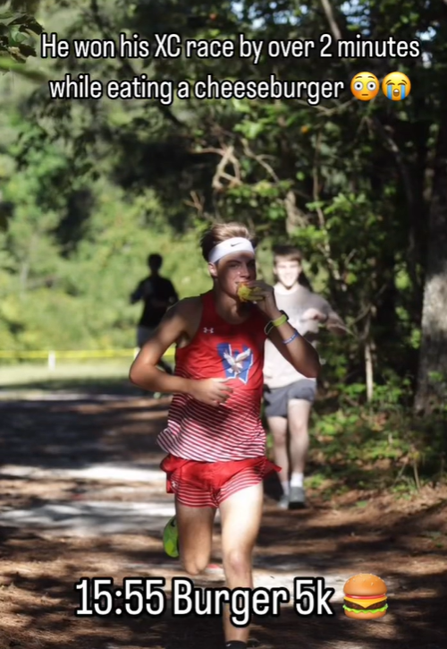
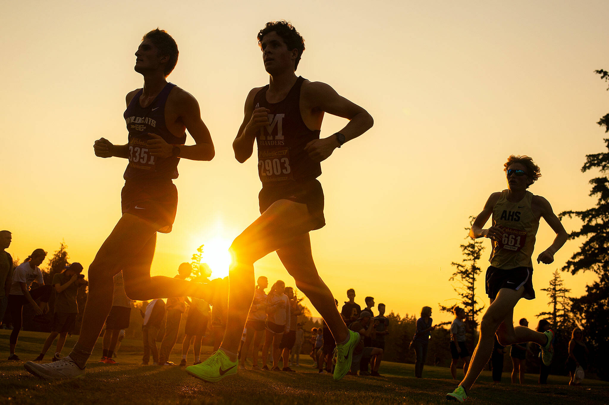

Munch XC

Photo found by "milesplitcarolinas" and "ethanjrich2008"
FAQs
What is Munch XC?
Is it a crossover of the culinary club and cross country? 🤷.
How fast is munch XC? If you would like to see our times for 3 miles click here.
Future Endeavors

- Oregon: Part of Munch XC will be going to Oregon to race. We will run with spikes for the first time (spikes are not allowed for racing in CA, but now we oustide so they're legal). 😱
- Mukbang: Status=In Progress